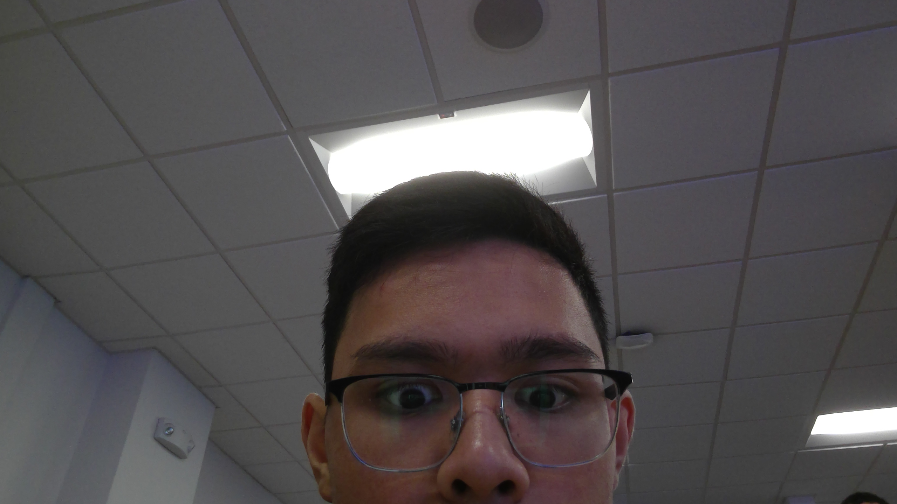

| |
|
|
|
|---|
This page contains information about me. My name is Nathan Kong and I am from Cranston, Rhode Island. I am a student majoring into
computer science (BS) at URI. Some of my hobbies includes playing video games such as League of Legends, and playing lacrosse. When I grow
up, I hope to become a software developer and hopefully own a house in California. I am a huge star wars fan and my favorite football team
is the New Orlean Saints.
When I am older, I hope I can become a software developer or database administator. I really enjoy computer science at the moment because
it offers a new way of creating things. That is the main reason why I chose to major in computer science because it offer innovation of making
new technology that can be use by many.
Back to home page
